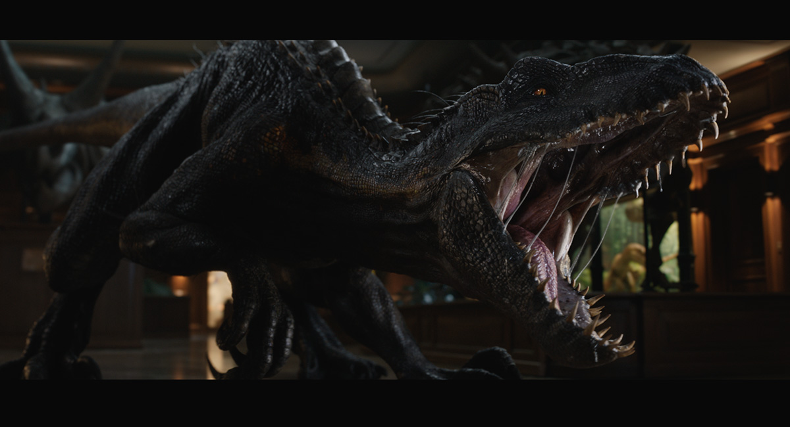

L’Indoraptor est le fruit d’une manipulation génétique extrême, conçu pour être un prédateur furtif, intelligent et obéissant. Inspiré de l’Indominus Rex et du Velociraptor, il combine les pires traits de chacun pour devenir une arme vivante.

Dans Jurassic World: Fallen Kingdom (2018), l’Indoraptor est présenté comme une arme de guerre potentielle. Il s’échappe lors d’une vente aux enchères clandestine et traque les protagonistes dans le manoir Lockwood, dans une séquence digne d’un film d’horreur.